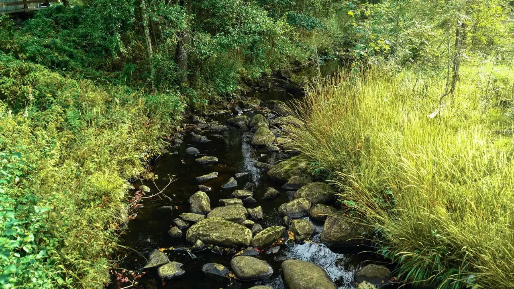
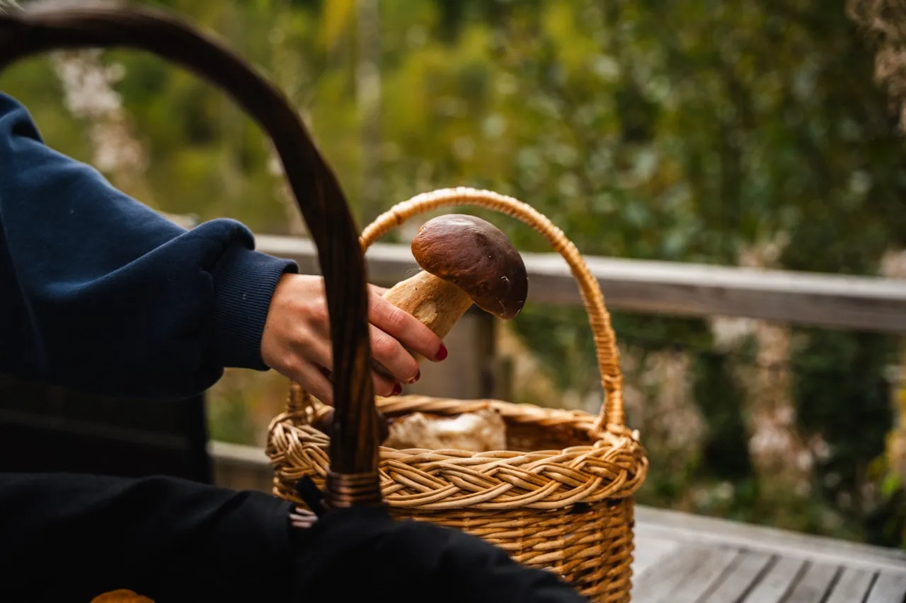

The babbling stream
The guesthouse sits right by a stream. Fall asleep and wake up to a peaceful soundscape – and cool off with a cold plunge after the sauna.
Forest trails, Lake Åsunden and a ski and bike resort of its own. Here are our hosts' best tips around Pinebo Palace – and you'll find more in the house manual in the guesthouse.
Leave the car for a while. Some of the best experiences are right outside the guesthouse.

The guesthouse sits right by a stream. Fall asleep and wake up to a peaceful soundscape – and cool off with a cold plunge after the sauna.

The mossy green forest begins at the deck. Take a walk among the trees and end the day in the wood-fired sauna.

The forest around the guesthouse is full of mushrooms and berries. Take a basket on your walk – we're happy to tell you where to look.
A short loop or a full day on the trail? Most trails are within 20 minutes' drive of the guesthouse.
A lovely forest loop.
Lassalyckan
A beautiful path starting at the entrance to Kråkebo nature reserve.
Kråkebo nature reserve
A cultural trail with scenic spots, around 50 old crofts, the earth hut Jordkulan in Nöre and many ancient monuments.
Dalum
Starts at the Lassalyckan outdoor area and follows a winding forest road down to the Pinebo stream, past the ruins of the Rönnåsen farm and up to Galtåsen – the highest point in Västergötland.
Lassalyckan
The trail through Grönahög has several interesting stops along the way.
Grönahög–Påbo
Start and finish in charming Vegby. Both trails reach the top of the hill, 238 metres above sea level.
Vegby
One of the largest wetlands in southern Sweden, with bogs, streams, patches of forest and islands of firm ground – and rich birdlife.
Mörkö
A trail run route through exciting nature, away from the area's wide tracks.
Lassalyckan
A varied trail partly along a historic railway embankment, through well-preserved farmland and past remains of the old bridle path.
Marbäck
A beautiful trail around Lake Mogden, one of the focal points of Hökerum, with several ancient monuments and sights along the way.
Hökerum
Plan for the weather, terrain and your own ability. Lengths and difficulty levels as given in each trail's description.
Cool off on a hot summer's day – several of the swimming spots are on Lake Åsunden.
Within walking distance of Ulricehamn town centre, right next to Prången campsite. Shallow for about 200 metres, with a lovely sandy beach.
Shallow water · Sandy beach
A lawn and a small sandy beach. A campsite, kiosk and cafeteria are nearby.
Lawn · Kiosk
At the northern end of Lake Åsunden, close to the town centre, with large lawns and views over the whole northern part of the lake. The Ulricaparken playground is right next to it, and a cold-bath house, café, restaurant and beach volleyball court are nearby. There are also dedicated dog swimming areas.
Dog swimming · Near the centre
Driving times from Pinebo Palace – to the supermarket, the ski slopes or the city.
| Destination | What awaits | Driving time |
|---|---|---|
| Coop | The nearest supermarket | 4 min |
| Willys | Supermarket | 7 min |
| ICA Maxi Stormarknad | Hypermarket with a wide range | 10 min |
| Ulricehamn Ski Bike Hike | Open all year. In winter 8 slopes, 7 lifts, a children's area and a ski school – in summer a bike park with 12 downhill trails, from easy to extreme. skibikehike.se | 13 min |
| Borås | A larger town with shopping and restaurants | 30 min |
| Gothenburg | A city on the west coast | 1 h 10 min |
Take a walk in the spring sunshine along one of the trails and listen to the stream babbling past the guesthouse.
Swim in Lake Åsunden, ride the bike park at Ski Bike Hike and barbecue on the deck in the evening sun.
Pick mushrooms and berries in the forest around the guesthouse and go hiking as the leaves change colour.
Go skiing at Ulricehamn Ski Bike Hike, 13 minutes away – and warm up in the wood-fired sauna and hot tub when you get back.

Start the day in peace and quiet to the sound of the stream.
A 4.1 km forest loop at Lassalyckan – just right for a morning.
Take a break at Sturebadet near the town centre, with a café, restaurant and dog swimming area.
Finish in the wood-fired sauna, cool off in the cold plunge with stream water and warm up in the hot tub.
Stay in a dog-friendly guesthouse in the forest outside Ulricehamn – with a wood-fired sauna, cold plunge and hot tub.